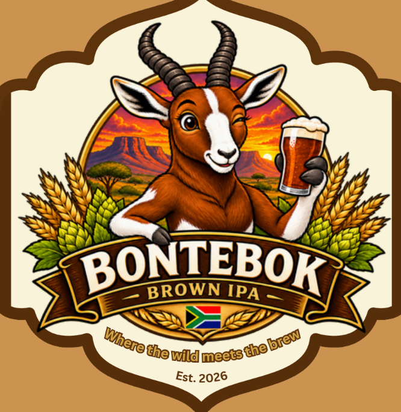

Rich in color and bold in character, our Brown IPA draws the inspiration from the distinctive chestnut brown coat of the South African Bontebok. Inspired by the bontebok of Thornkloof Ranch Grahamstwon(Makhanda), this beer celebrates the strength and character of the remarkeable antelope. with warm malt, balanced bitterness and a bold hop aroma, its a tribute to the spirit of the Eastern Cape.